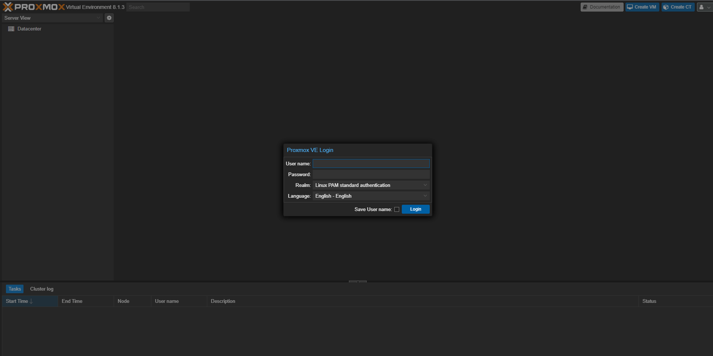
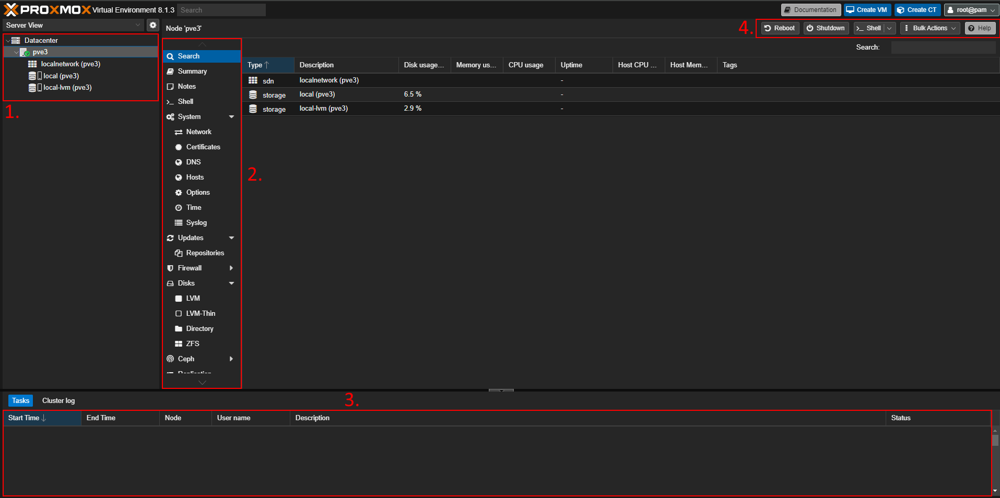

Proxmox kennenlernen
Erste Anmeldung
Username ist Root und das Passwort wurde bei der
Installation vergeben.


Auflistung der Nodes und deren untergeordneten Elementen. Bei einer Frischen Installation sollte nur eine Node vorhanden sein.
Auflistung der Aktionen für das ausgewählte Element
Auflistung aller Tasks. Zeigt an ob es Erfolgreich war oder nicht. Bei doppelklick öffnet sich ein Fenster mit mehr Infos.
Hier kann man die ausgewählte Node herunterfahren, neustarten oder die Shell öffnen.